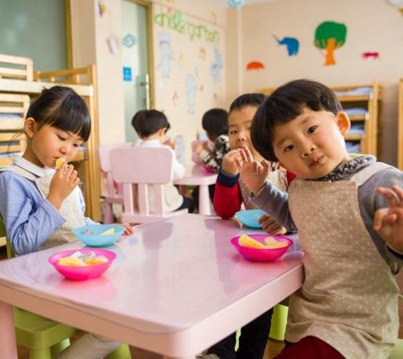

Tentang Kami
PAUD Bahtera adalah lembaga pendidikan anak usia dini yang berkomitmen memberikan pengalaman belajar sambil bermain yang menyenangkan, aman, dan penuh kasih sayang. Dengan pendekatan yang dirancang khusus untuk anak usia dini, kami mendorong anak-anak untuk belajar, bertumbuh, dan mengembangkan potensi mereka melalui kegiatan yang kreatif dan interaktif. Didirikan oleh pendidik berpengalaman, PAUD Bahtera berupaya membangun landasan pendidikan yang kuat untuk anak-anak, mempersiapkan mereka untuk tantangan masa depan dengan menumbuhkan rasa percaya diri, kemandirian, dan cinta belajar.